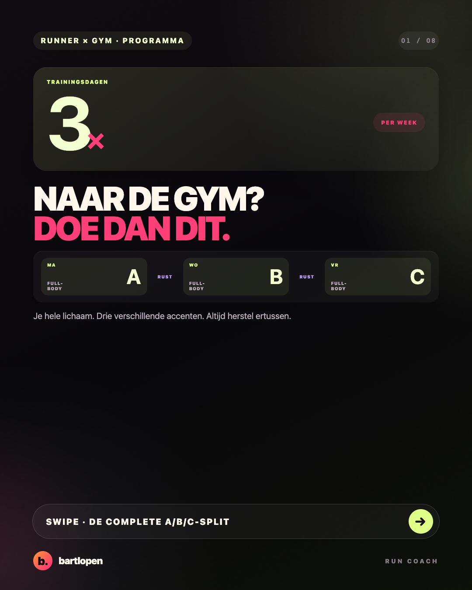
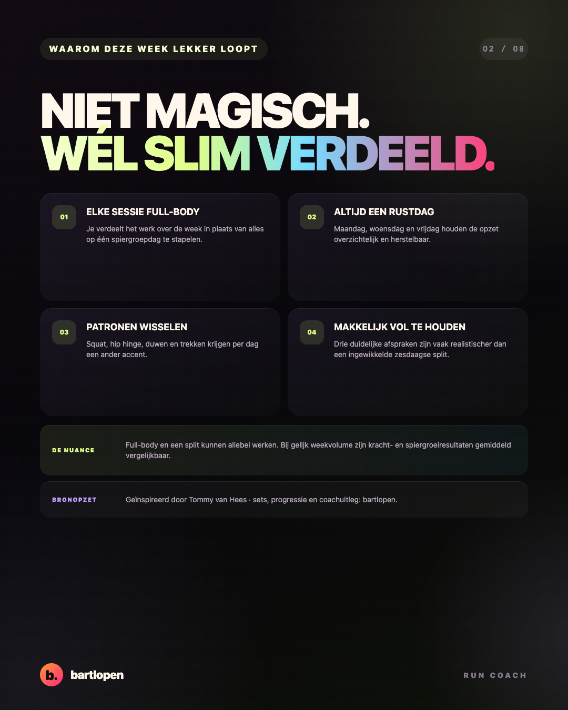
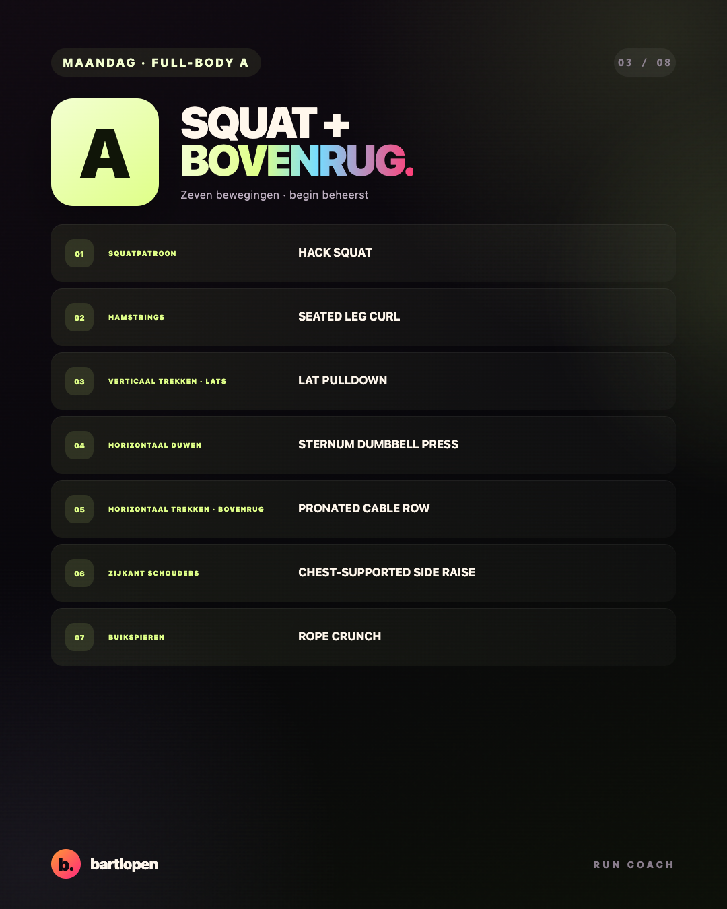
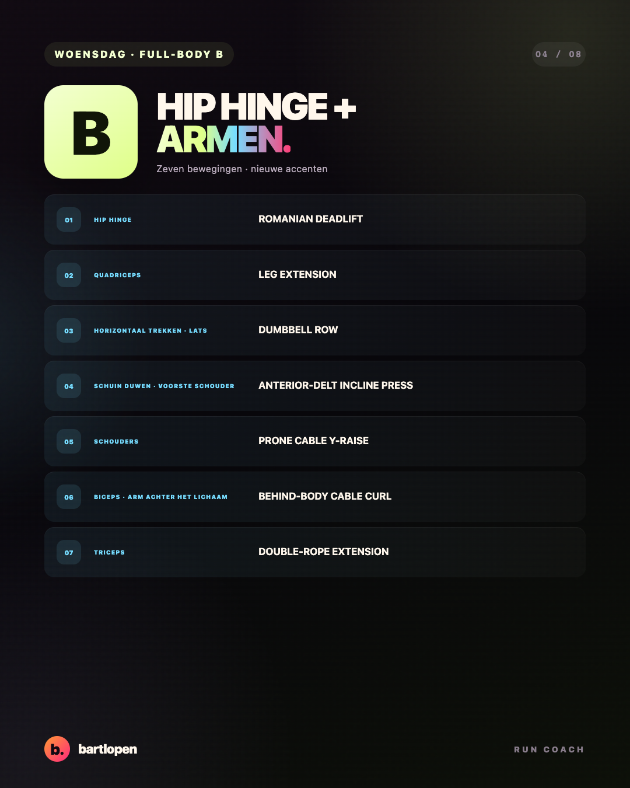
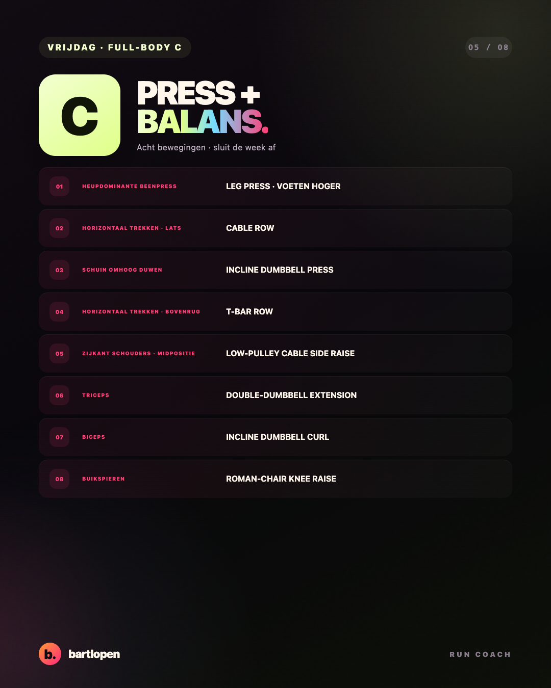
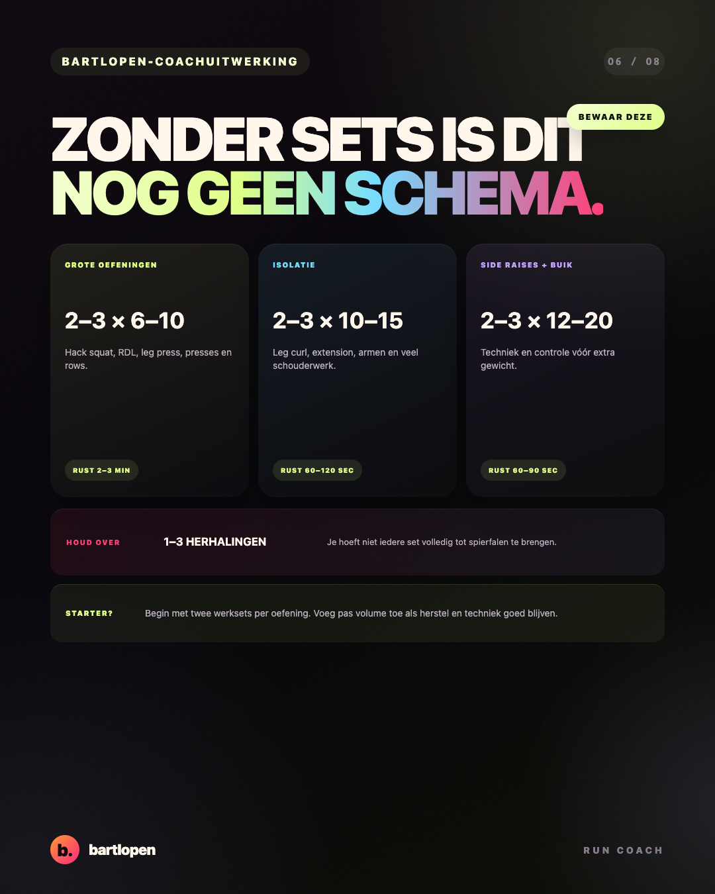
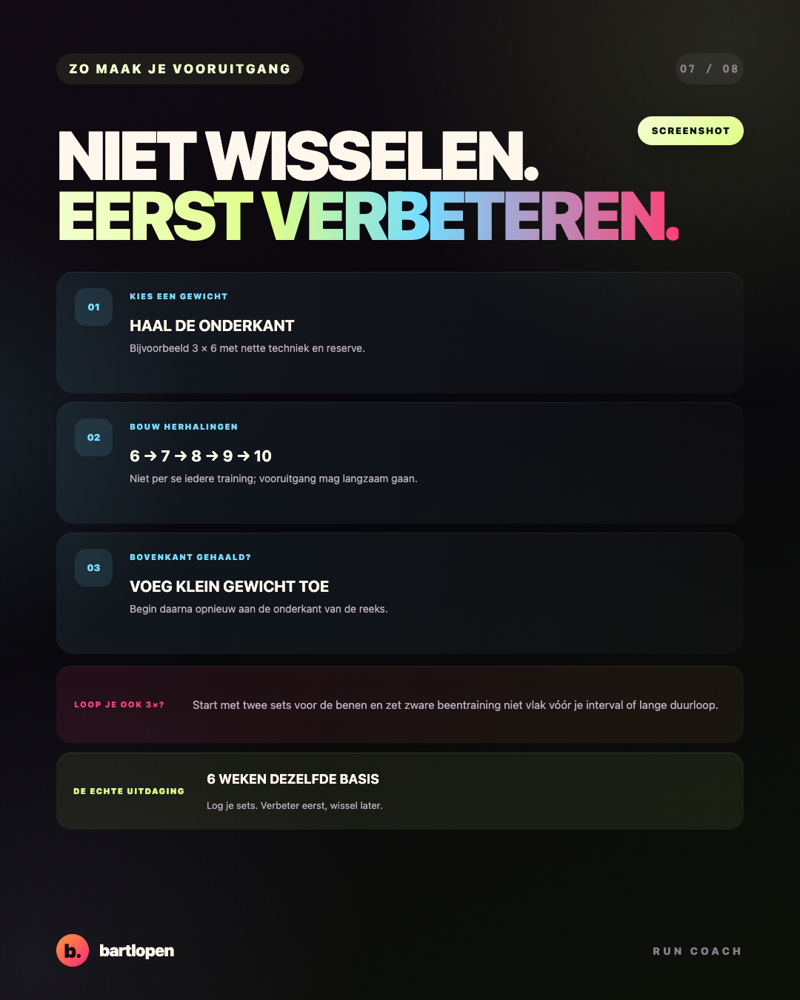
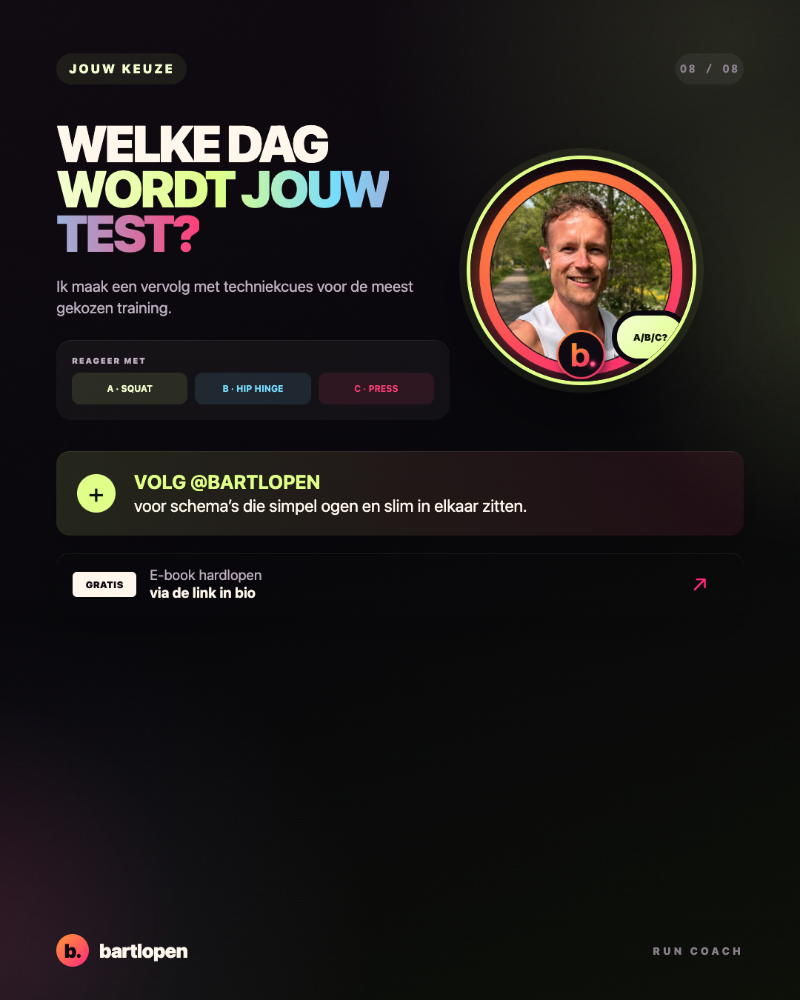

SLIDE 01 ↗Driedaagse
full-bodysplit
Full-body A, B en C met alle oefeningen uit de gedeelde video, plus een eigen bartlopen-uitwerking voor sets, herhalingen, progressie en de combinatie met hardlopen.

SLIDE 02 ↗
SLIDE 03 ↗
SLIDE 04 ↗
SLIDE 05 ↗
SLIDE 06 ↗
SLIDE 07 ↗
SLIDE 08 ↗Caption
JE HEBT GEEN ZESDAAGSE SPLIT NODIG. 👀 Train je drie keer per week? Dan is een full-body A/B/C-opzet vaak logischer dan een schema voor zes dagen in drie dagen proberen te proppen. Ik heb deze weekindeling zelf gebruikt. Wat ik er fijn aan vind: ✅ iedere trainingsdag raakt je hele lichaam ✅ je wisselt bewegingspatronen en accenten af ✅ tussen A, B en C zit altijd een rustdag ✅ je kunt zes weken lang gericht sterker worden Mijn startpunt: 🏋️ grote oefeningen: 2–3 × 6–10 🎯 isolatie: 2–3 × 10–15 🔥 schouders en buik: 2–3 × 12–20 ⏳ houd meestal 1–3 herhalingen over Full-body is niet automatisch beter dan iedere andere split. Weekvolume, inspanning, progressie en vooral volhouden blijven belangrijker dan de naam van je schema. Loop je daarnaast drie keer per week? Begin dan met twee sets voor je benen en bescherm je intervaltraining en lange duurloop. UITDAGING: draai deze basis zes weken zonder iedere maandag nieuwe oefeningen te zoeken. Welke dag wil jij als eerste proberen: A, B of C? 👇 Weekopzet en oefeningen geïnspireerd door Tommy van Hees – Jouw Topvorm. Sets, progressie en hardloopvertaling: bartlopen. #fullbodyworkout #trainingsschema #krachttraining #gymtips #spiergroei #hardlopen #bartlopen
Bronnen: de gedeelde video van Tommy van Hees – Jouw Topvorm, de ACSM-richtlijn voor krachttraining uit 2026 en een systematische review met meta-analyse naar full-body versus splitschema’s.